1~3위 — 업무 매뉴얼, 디자인 부품, 아이디 추적
영상은 11월 10일 깃허브 트렌딩 페이지에서 11개를 골라 한 개에 30초 남짓씩 소개해요. 아래 화면처럼 트렌딩 목록에는 저장소 이름, 한 줄 설명, 언어, 전체 별 수, 오늘 받은 별 수가 같이 나와요. 순위는 이 트렌딩 순서라서 전체 별 수와는 맞지 않아요.
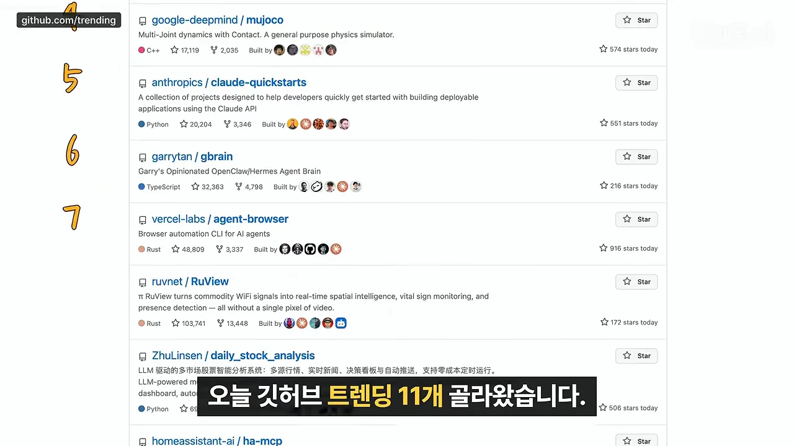
영상이 각 저장소를 소개할 때 화면에 띄운 별 수를 한 그림에 모았어요. 1위 스킬 저장소와 3위 셜록, 8위 RuView가 10만 개를 넘고, 10위 ha-mcp는 6천 개도 안 돼요.
1위 anthropics/skills — 오피스 스킬 네 개가 아파치 2.0으로
스킬은 클로드가 특정 작업을 할 때 꺼내 읽는 업무 매뉴얼이에요. PDF를 다루라는 요청이 오면 클로드가 PDF 스킬을 찾아 그 절차대로 일해요. 저장소를 열면 폴더 하나가 스킬 하나예요. 화면에서 동그라미 친 docx, pdf, 그리고 pptx, xlsx 네 폴더 옆에 '3 days ago'로 같은 커밋 메시지가 붙어 있어요.
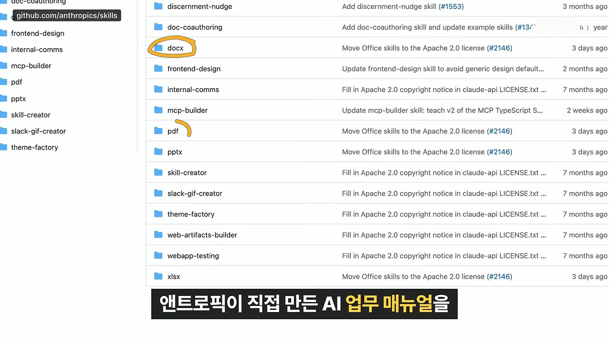
무엇이 바뀌었는지는 docx 폴더의 LICENSE.txt 변경 내역에 보여요. 빨간 줄로 지워진 부분이 예전의 'ADDITIONAL RESTRICTIONS'예요. 자료를 추출하거나 복사하지 말 것, 2차 저작물을 만들지 말 것, 재배포·재라이선스하지 말 것 같은 조항이 통째로 빠졌어요.
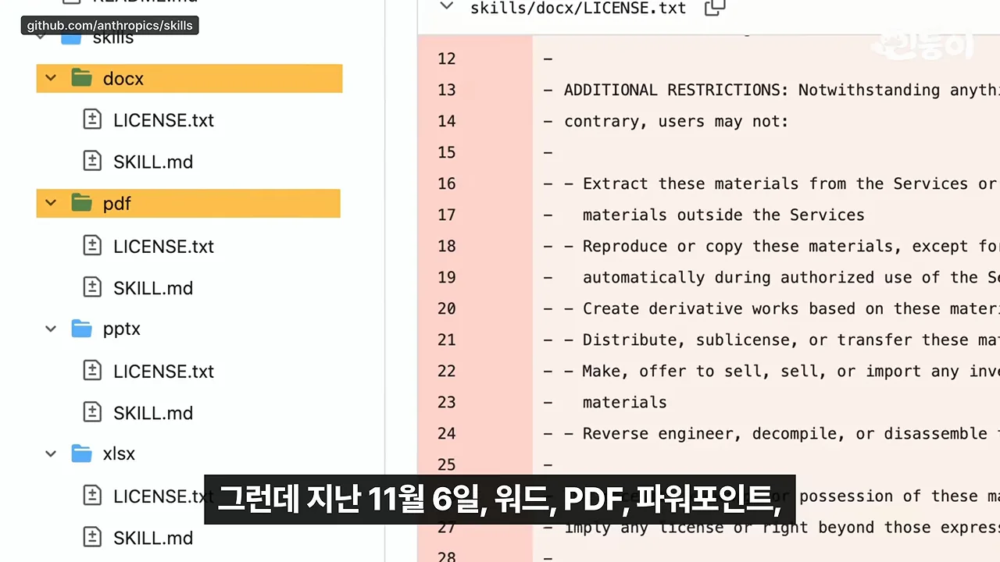
영상은 배경도 하나 덧붙여요. 앤트로픽은 10월에 스킬 표준 자체를 리눅스 재단 산하 AAIF(Agentic AI Foundation)에 기증했어요. 화면의 앤트로픽 공지 문장 중 노란 부분이 '표준을 AAIF에 기증한다'는 대목이에요. 이미 70개 넘는 AI 플랫폼이 이 표준을 쓰고, 앤트로픽 집계로 스킬 설치는 약 2억 8천만 건이에요.
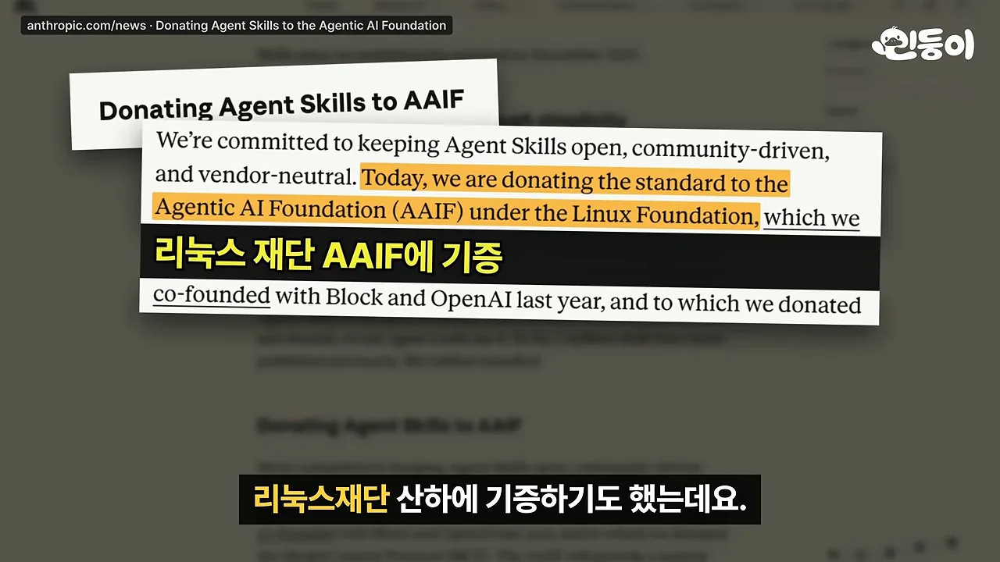
2위 meta/astryx — AI가 읽고 쓰는 디자인 시스템
Astryx는 메타가 공개한 무료 디자인 시스템이에요. 버튼, 메뉴, 입력창 같은 부품과 그 사용법을 한데 모아 놨어요. 영상이 강조하는 점은 사람뿐 아니라 AI도 읽기 쉽게 만들었다는 거예요. 클로드 코드에 '관리자 페이지 만들어 줘'라고 하면, AI가 부품과 사용법을 참고해 아래 템플릿처럼 통일된 화면을 짜요. 화면 위쪽 탭이 Dashboard, Table, Form, Settings, Login처럼 페이지 종류별로 나뉘어 있어요.
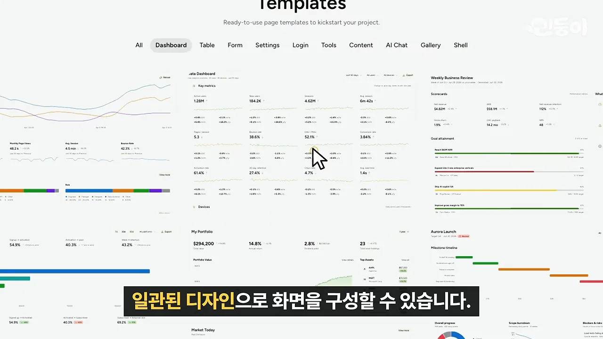
새로 만든 프로젝트가 아니에요. 공식 사이트 문구에 따르면 메타 안에서 8년 동안 자랐고, 1만 3천 개 넘는 앱이 이미 이걸로 만들어졌어요. 이제 외부 개발자도 무료로 가져다 원하는 대로 고칠 수 있어요.
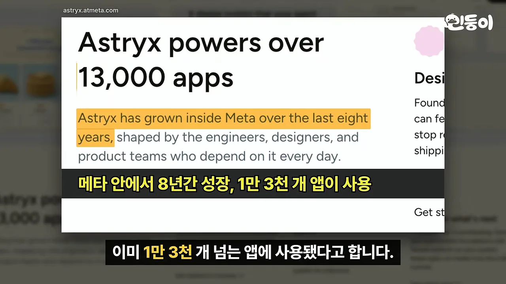
3위 sherlock — 아이디 하나로 400개 사이트 훑기
셜록은 별 약 10만 6천 개에, 트렌딩 당일 하루에만 4,294개를 받았어요. 아이디 하나를 넣으면 400개 넘는 SNS(Social Networking Service)와 웹사이트에서 같은 이름의 계정이 있는지 확인하는 OSINT(Open Source Intelligence) 도구예요. 아래 결과 화면은 예시 아이디 hackerman1337을 돌린 것이에요. 줄마다 사이트 이름과 계정 주소가 찍히고, 노란 줄이 GitHub와 Reddit에서 찾은 계정이에요.
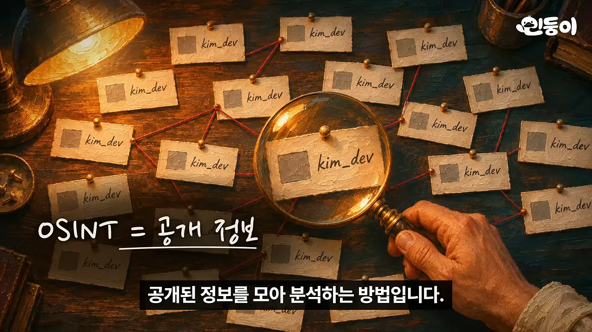
4~6위 — 로봇 연습장, 클로드 예제, 에이전트 기억
4위 MuJoCo — 로봇이 먼저 넘어져 보는 곳
MuJoCo는 구글 딥마인드가 만든 로봇 시뮬레이션 환경이에요. 영상은 엔비디아 Isaac Sim과 같은 종류라고 소개해요. 로봇이 실제로 걷기 전에 컴퓨터 속 가상 몸으로 수없이 넘어지며 연습하는 곳이에요. 아래 릴리스 화면의 노란 줄이 'Version 4.0.0 (November 6, 2026)'이에요.
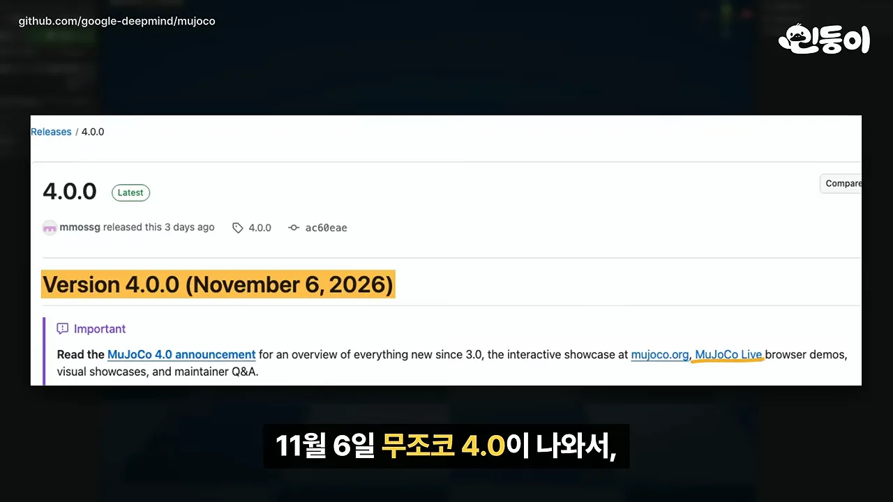
4.0의 두 번째 변화는 말랑한 물체예요. 아래 장면에서 왼쪽 파란 판은 딱딱한 물체이고, 오른쪽 금빛 고리에 걸린 것은 천처럼 구겨지는 물체예요. 영상은 여기에 하나를 더해요. 빠르거나 얇은 물체가 서로 뚫고 지나가던 문제를 막아서, 로봇 팔이 떨어지는 0.7mm 카드를 매번 잡아낸다고 해요. 지난 한 달 PyPI에서만 약 360만 번 내려받았어요.
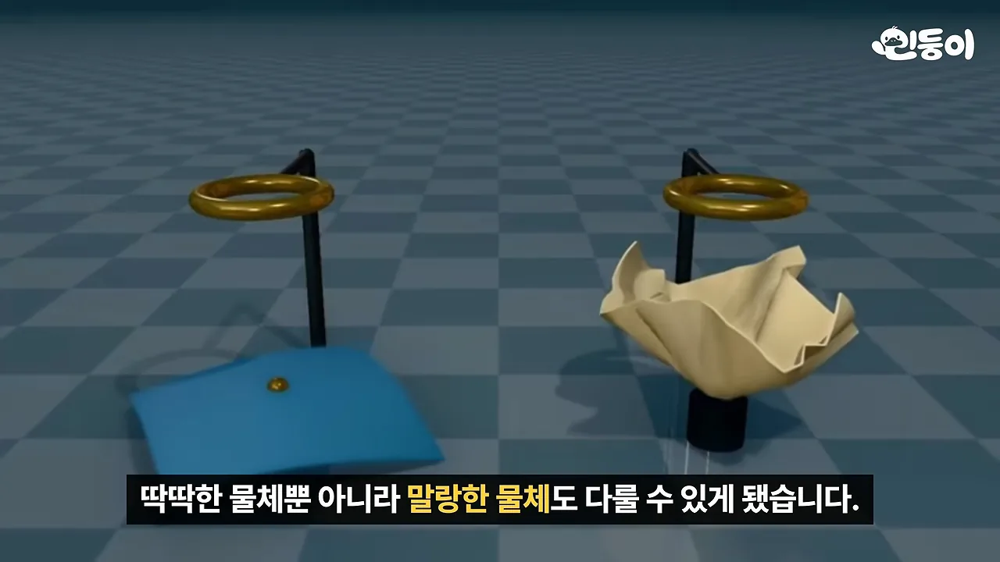
5위 claude-quickstarts — 복사해서 시작하는 클로드 예제
claude-quickstarts는 앤트로픽이 낸 예제 프로젝트 모음이에요. 클로드로 앱이나 에이전트를 만들 때 통째로 복사해서 시작점으로 써요. 폴더 하나가 예제 하나라서, 화면에 보이는 agents, autonomous-coding, browser-toolset이 각각 에이전트 기본기, 자율 코딩, 브라우저 조작 예제예요.
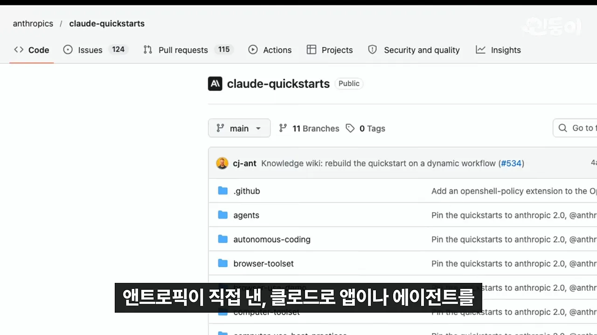
10월 29일에 들어온 Sentry Autofix가 이번에 주목받은 예제예요. Sentry는 서비스에서 난 에러를 모아 보여 주는 도구예요. 에러가 뜨면 에이전트가 에러 기록을 읽고 코드를 고친 다음 수정 요청(PR(Pull Request))까지 올려요. 아래 세션 목록에서 'Sentry Autofix Session'이 한 줄씩 쌓이고, 위 두 개는 Running, 아래는 Idle 상태예요.
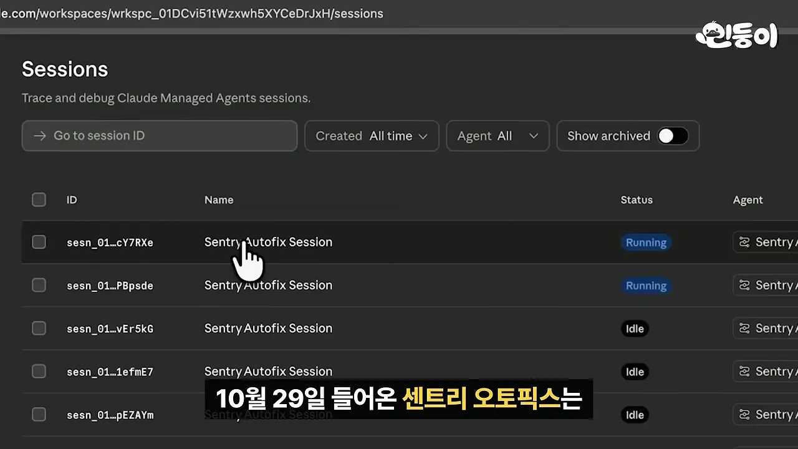
6위 gbrain — 대화가 끝나도 남는 에이전트의 기억
gbrain은 Y 콤비네이터 대표 게리 탄의 프로젝트예요. 그는 별 14만 개가 넘는 클로드 코드 설정 모음 gstack을 만든 사람이기도 해요. 이번 것은 AI 에이전트용 장기 기억 저장소예요. 미팅, 이메일, 음성 통화, 아이디어를 쌓아 두고, 미팅 전에 상대를 물으면 역할과 지난 대화, 남은 약속을 정리해 줘요. 아래 README 예시는 Alice라는 사람을 물었을 때의 답이에요. 노란 문장 'Every claim has a source page behind it'처럼 답마다 출처 페이지가 붙어요.
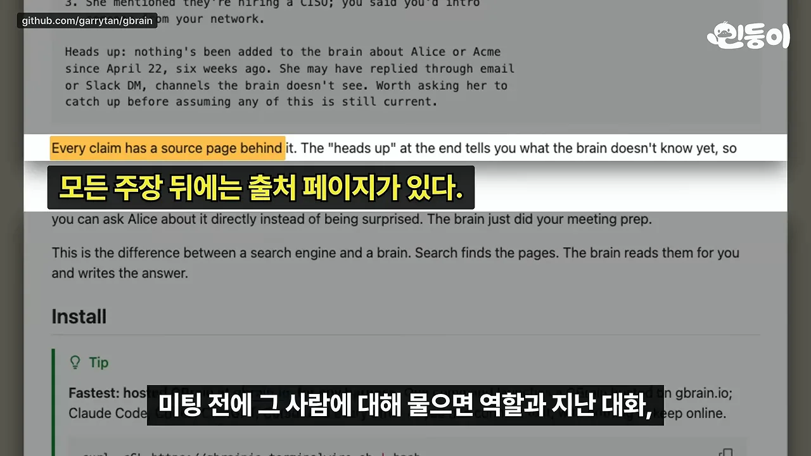
반응은 갈렸어요. 아래 해커 뉴스 댓글의 노란 줄은 'OpenClaw와 Hermes 같은 에이전트의 가장 설득력 있는 쓰임새'라는 평이에요. 바로 아래 줄은 'LLM에 마음과 뇌를 열어 주는 만큼 로컬 추론이 낫지 않냐'는 질문이에요. 다른 댓글에선 만든 사람이 'AI 정신병'을 살고 있다는 말까지 나왔어요.
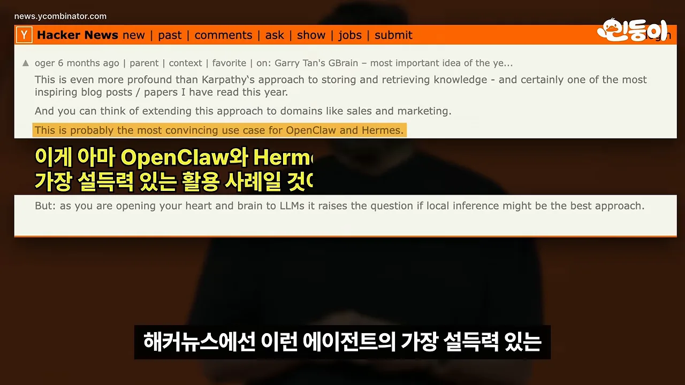
7~9위 — 브라우저 조작, 와이파이 감지, 주식 리포트
7위 agent-browser — AI가 직접 눌러 보는 브라우저
agent-browser는 Vercel Labs가 만든 무료 명령어 도구예요. AI가 사람처럼 브라우저를 열고 클릭하고 입력해요. 쓰임새는 이런 식이에요. 클로드 코드가 방금 만든 앱을 직접 열어 버튼을 눌러 보고, 깨진 곳을 찾아 고쳐요. 아래 화면 위쪽이 기본 명령 다섯 줄이고, 노란 줄 'snapshot -i'가 핵심이에요. 이 명령을 치면 화면 아래처럼 'Learn more' 링크에 [ref=e1] 같은 번호표가 붙어요.
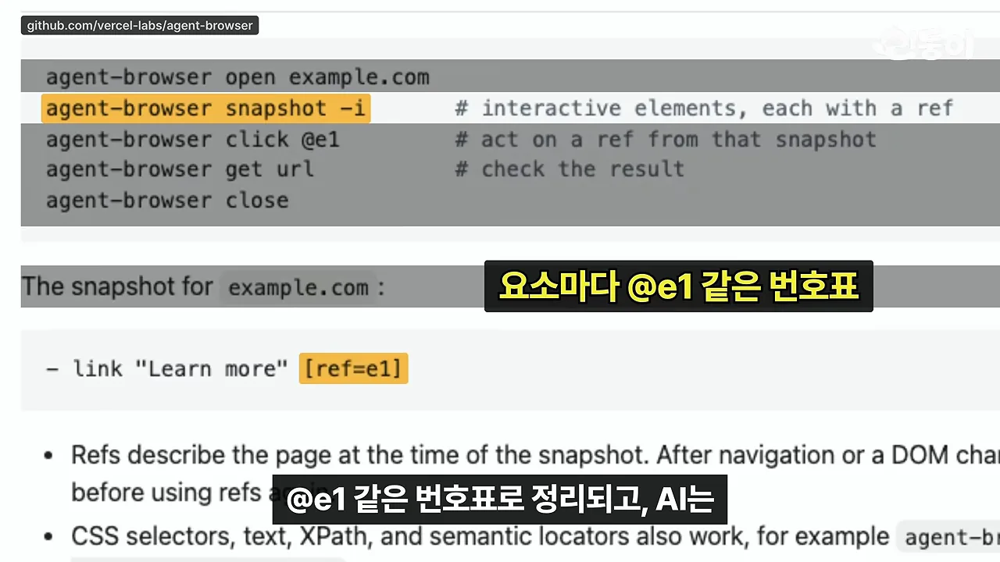
agent-browser open example.com
agent-browser snapshot -i # 누를 수 있는 요소마다 번호표(ref)를 붙여 보여 줘요
agent-browser click @e1 # 번호표로 클릭
agent-browser get url
agent-browser close해커 뉴스에선 기존 브라우저 조작 도구인 Playwright MCP(Model Context Protocol)보다 빠르다는 반응이었어요.
8위 RuView — 와이파이로 사람을 본다는 주장과 검증
RuView는 별 약 10만 3천 개를 받았어요. 와이파이 전파가 사람 몸에 부딪혀 달라지는 걸 읽어서, 카메라 없이 누가 있는지, 숨 쉬는지, 움직이는지 알아내겠다는 프로젝트예요. 아래 소개 그림의 왼쪽 아래에 심박 72 BPM(Beats Per Minute), 호흡 16 BPM 같은 수치가 있고, 맨 아래에 자세 추정, 생체 신호, 존재 감지 세 기능이 적혀 있어요.
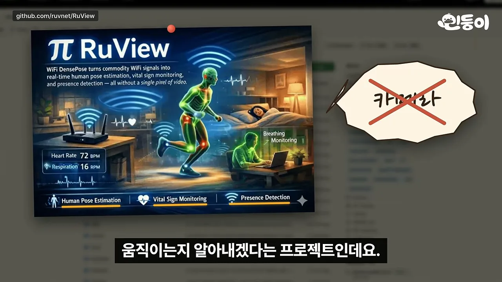
호흡과 심박까지 보려면 9달러짜리 ESP32-S3 같은 보드가 따로 필요해요. 일반 노트북으로는 '있나, 움직였나' 정도만 거칠게 잡혀요. 해커 뉴스엔 만든 사람 말고는 아무도 작동을 확인하지 않았다는 댓글이 달렸어요. 11월 3일 나온 독립 리뷰의 숫자가 아래 화면이에요. 내레이션은 '같은 기기에서 약 3%, 방이 바뀌면 약 10%'라고 요약했어요.
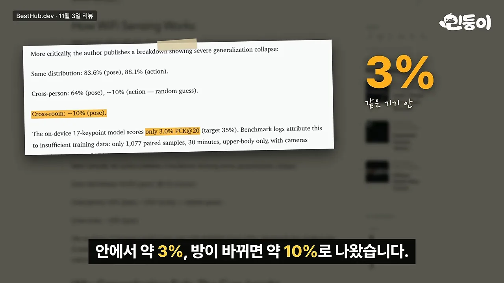
화면의 리뷰 원문을 표로 옮기면 이래요. 같은 환경 데이터로 시험하면 83.6%가 나오지만, 사람이나 방이 바뀌면 크게 떨어져요. 3%는 '같은 기기'라기보다 기기 위에서 직접 돌린 작은 모델의 점수예요.
| 시험 조건 (리뷰 원문) | 자세 정확도 |
|---|---|
| 학습과 같은 환경 | 83.6% |
| 다른 사람 | 64% |
| 다른 방 | 약 10% |
| 기기에서 돌린 17관절 모델 (PCK(Percentage of Correct Keypoints)@20) | 3.0% (목표 35%) |
9위 daily_stock_analysis — 포크가 별의 82%인 이유
관심 종목을 AI가 매일 훑어보고, 시세와 뉴스를 모아 분석 보고서를 메신저로 보내 주는 무료 도구예요. 별이 약 6만 8천 개인데, 아래 화면에서 Fork 56.4k, Star 69k가 나란히 보여요. 포크가 별의 82%에 이르는 저장소는 드물어요.
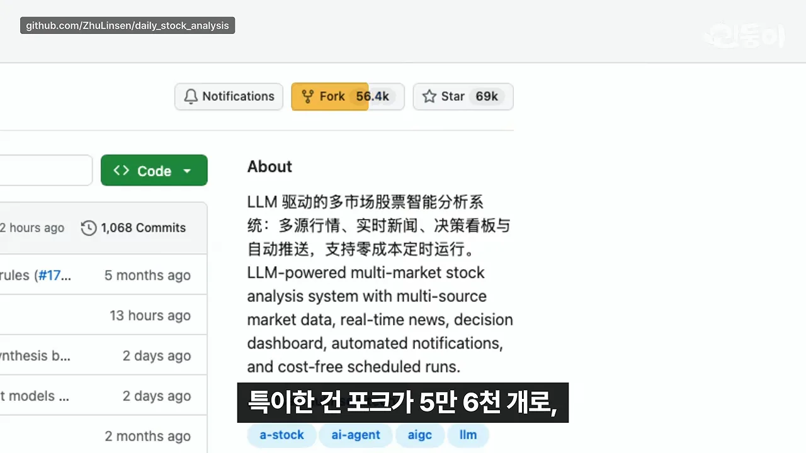
이유는 설치 방식에 있어요. 안내서가 처음부터 저장소를 포크하라고 해요. 복사한 저장소에서 깃허브 액션을 켜면 서버를 따로 돌리지 않아도 평일 정해진 시간에 자동으로 실행돼요. 아래 워크플로 파일의 노란 줄 cron '0 10 * * 1-5'가 그 시간표예요. 월~금 UTC(Coordinated Universal Time) 10시, 베이징 시간으로 오후 6시에 돌아요.
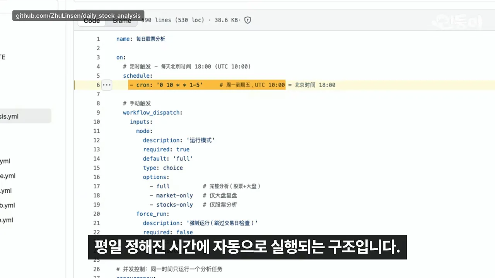
10~11위 — 스마트홈 연결, AI 직원 여러 명
10위 ha-mcp — 스마트홈을 말로 고치기
ha-mcp는 스마트홈 앱 Home Assistant를 클로드나 ChatGPT에 연결해 주는 MCP 서버예요. 말로 기기를 조작하고, 자동화와 대시보드까지 만들게 해요. 아래 README 표는 왼쪽이 사용자가 하는 말, 오른쪽이 실제로 일어나는 일이에요. 노란 줄은 '모션 센서 자동화가 안 돼, 고쳐 줘'라고 하면 실행 기록을 분석해 문제를 찾고 수정안을 낸다는 뜻이에요.
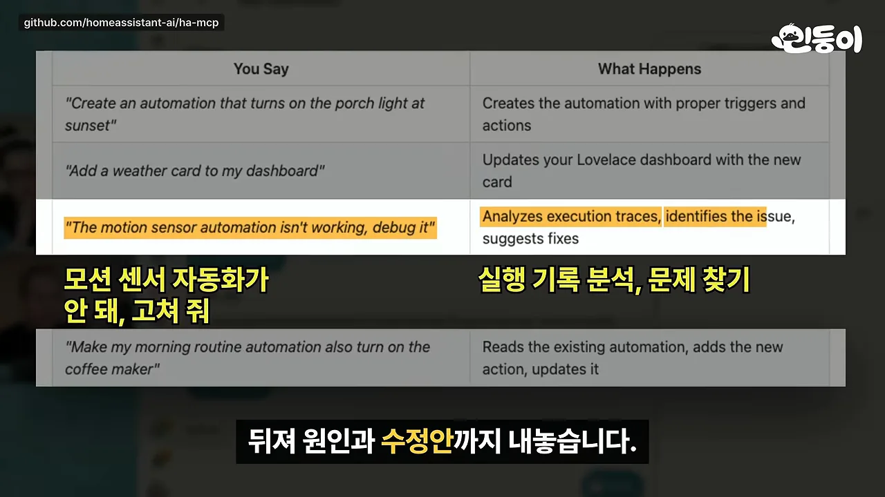
11월 4일 나온 Home Assistant 2026.11에서 커뮤니티 애드온 상점이 내장 마켓플레이스로 들어왔어요. ha-mcp는 그 기본 목록에 올랐어요. 아래 설치 안내의 노란 문장이 'HA-MCP is in the default catalog'예요. 포럼의 버그 제보 글에서조차 '이 통합 정말 대단하다'며 칭찬부터 한 사용자가 있었어요.
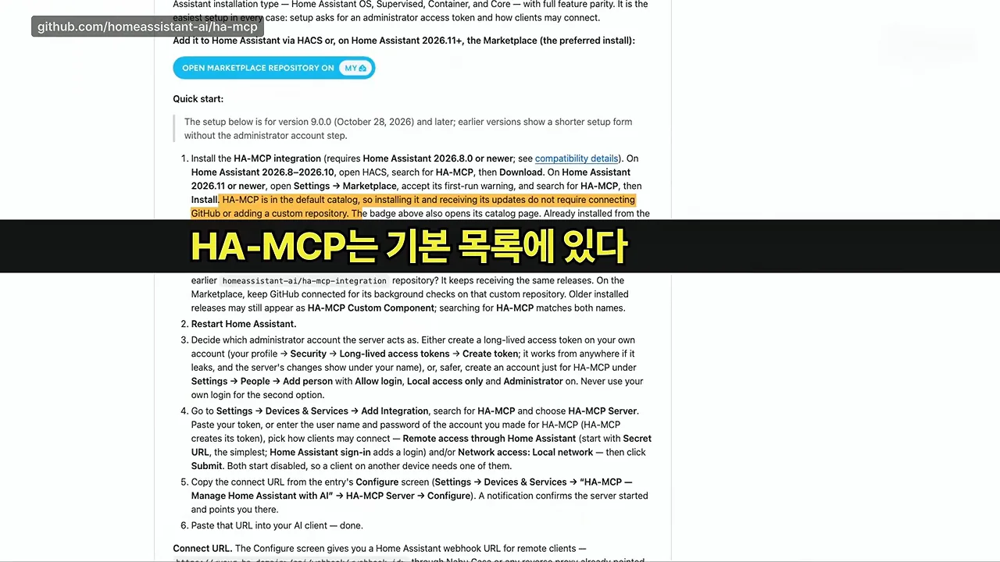
11위 OpenMausBot — AI 직원마다 컴퓨터 한 대
OpenMausBot은 xAI의 Grok Bot을 대체하겠다고 나온 무료 오픈소스예요. 채팅 앱에서 여러 AI 직원에게 일을 맡기는 구조예요. 제목 카드의 물음 'AI 직원마다 컴퓨터 한 대?'가 이 프로젝트의 요점이에요.
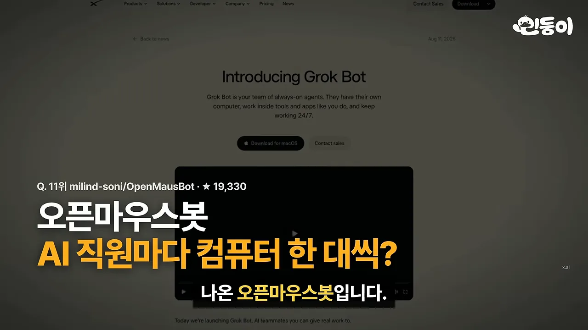
쓰던 클로드, Codex, Grok CLI(Command Line Interface)를 연결하면 AI마다 독립된 컴퓨터 환경에서 일해요. 아래 화면 왼쪽이 봇과의 대화이고, 오른쪽 'Computer' 칸이 봇이 쓰는 컴퓨터 화면이에요. 그 아래 'Runs on'에서 클라우드 상자와 내 맥 중 어디서 돌릴지 골라요. 왼쪽 아래 'Your bot has a question' 카드는 봇이 진행 전에 사용자에게 묻는 장면이에요.
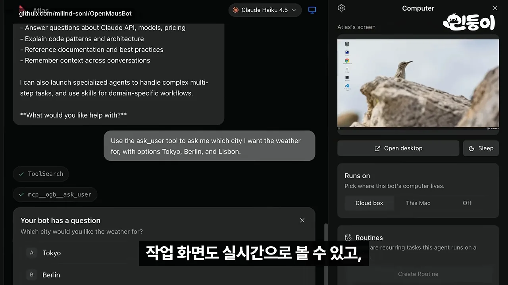